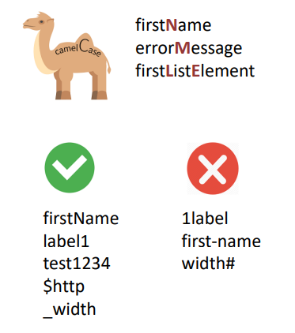

Тема 3. Змінні та типи даних
Тема 3. Змінні та типи даних
- Змінні та константи
- Використання консолі браузера
- Рекомендації щодо іменування змінних
- Типи даних у JavaScript
Інструкції
Змінна – іменована область пам’яті, яка зберігає у собі певне значення, що можна змінити.
let – ключове слово для створення змінних.
= - оператор присвоювання, з його допомогою можна встановити чи змінити значення змінної.
let message; message = 'Variables and data types in js';
Константа – стала величина. В JavaScript константа – змінна, значення якої не можна змінити. const
COLOR_RED = "#F00";
Використання консолі браузера
console – об’єкт для доступу до засобів налагодження
браузера
console.log(повідомлення) – метод для виведення
інформації в консоль браузера
Запуск інструментів розробника браузера, серед яких є
консоль, Chrome виконується за допомогою клавіші –
F12.
Найменування змінних
-
Імена змінних повинні містити літери, цифри, символи $ та _
- Першим символом не має бути цифра
- Якщо ім’я змінної містить кілька слів, використовується
camelCasing
- Регістр має значення
- Нелатинські букви дозволені, але не рекомендуються (let назва = '...';)
- Зарезервовані слова (let, class, return і function тощо)

Найменування змінних
- Використовуйте імена, які легко прочитати, як-от userName або shoppingCart.
- Уникайте використання абревіатур або коротких імен, таких як a, b та c, окрім тих випадків, коли ви точно
знаєте, що так потрібно.
- Робіть імена максимально описовими і лаконічними. Наприклад, такі імена погані: data і value. Такі імена
нічого не говорять. Їх можна використовувати лише тоді, коли з контексту очевидно, на які дані або значення
посилається змінна.
- Погоджуйте з вашою командою (та з самим собою), які терміни будуть використовуватися у проєкті. Якщо
відвідувач сайту називається “user”, тоді ми маємо давати відповідні імена іншим пов’язаним змінним:
currentUser або newUser, замість currentVisitor або newManInTown.
Типи даних
Тип даних – допустима множина значень. Тип даних описує набір операцій, які можна над цими
даними проводити.
- JavaScript – динамічно типізована мова
програмування. Під час створення змінної її тип не
вказується, але змінна зв’язується з типом при
присвоєнні значення.
- Тип даних явно не вказується.
- При зміні значення змінної може змінитися і тип
даних змінної.
Типи даних
- number для зберігання будь-яких чисел
let x = 10;
- bigint цілі числа довільної довжини
let x = 10n;
- string для зберігання рядків
let x = “hello”;
- boolean логічні значення true чи false
let x = true;
- null для визначення невідомого значення
let x = null;
- undefined для ненаданих значень
let x = undefined;
- object складні структури даних
let x = { }
- symbol унікальні ідентифікатори
let x = Symbol(“test”);
Виконання сценарію
JavaScript код виконується послідовно, інструкція за інструкцією. JavaScript – це мова програмування,
що інтерпретується.
Інтерпретація – порядковий аналіз (по кожному рядку), обробка та виконання вихідного коду
програми.
Компіляція – складання програми з перетворенням вихідного коду, написаного високорівневою
мовою програмування, в програмні модулі низькорівневою мовою
Під час інтерпретації про помилку можна дізнатися під час використання коду. Код до помилки
виконується, а після помилки – перестає інтерпретуватися.
У разі компіляції наявність помилки в коді призведе до помилки компіляції.